Combine bellos paisajes naturales con lugares sagrados para tres de las principales religiones del mundo y
tendrá Israel. Lo que algunos llamarían el corazón de Oriente Próximo tiene mucho que afrecer a los viajeros.
En Tel Aviv, el centro cosmopolita de la costa mediterránea de Israel, las visitas turísticas destacan la
arquitectura incluida en la lista de la UNESCO y los lugares de interés culinario, mientras que la región de
Mar Muerto cuenta con el oasis de Ein Gedi, la antigua Masada y, por supuesto, uno de los balnerrios
naturales más antiguos de mundo. Nazaret, Jericó, Masada y Belén son populares excursiones de un día tanto
desde Tel Aviv como desde Jerusalén, perfectas para quienes desees sumergirse en la história religiosa de la
región.
Las 12 mejores atracciones en Israel
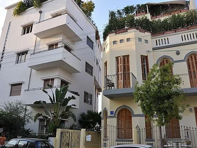
Neve Tzedek
El barrio original de Tel Aviv, Neve Tzedek fue el primer asentamiento
judío
fuera del antiguo puerto de Jaffa cuando fue creado en 1878. Después de un período de declive, ahora ha vuelto a
la vida como un distrito que se...LEER +
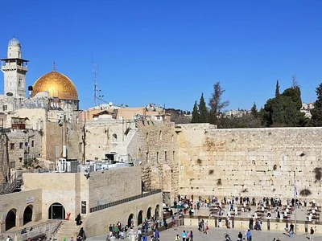
Muro de las lamentaciones
Una sinagoga al aire libre donde los fieles recitan sus oraciones. El histórica muro accidental de
Israel (Muro
de las Lamentaciones) es donde los viajeros vienen a besar piedras de color oro pálido del que... LEER +
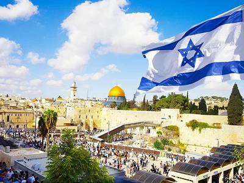
Ciudad vieja de Jerusalén
Las antiguas calles serpenteantes de la ciudad Vieja de Jerusalén alberga algunos de los enclaves
religiosos
más sagrados del mundo para judios, musulmanes y critianos, como son el Monte del Templo, la Iglesia del que...LEER +
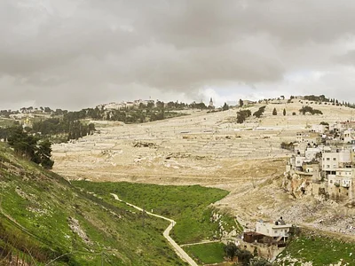
Kidron Valley
Situado en las afuera de la Ciudad Vieja de Jerusalén, el pintoresco Valle de Cedrón es una antiguo
cementerio
famoso por su importancia religiosa y belleza natural. El Valle divide el Monte del Templo y el Monte de las ...LEER +
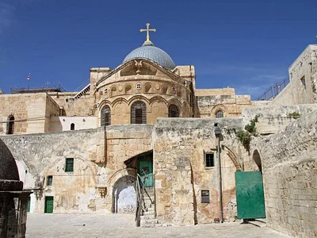
Vía de la Cruz
El camino de la Cruz Vía Dolorosa es un antiguo camino en el casco antiguo de Jerusalén, donde se
cree que
Jesús cargó el madero hasta su ejecución. También conocida en el catolicísmo como las Estaciones de la Cruz y más de...LEER +
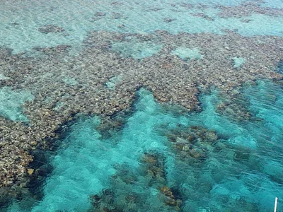
Reserva Natural de Coral Beach
Hogar de algunos arrecifes de coral tropicales más septentrionales del mundo, la Reserva Natural de
Coral Beach
ofrece el mejor esnórquel de Eilat, y probablemente el de Israel. Los parches de hierbas marinas que se...LEER +
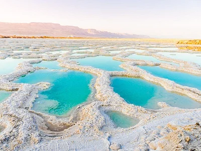
Mar Muerto
El mar muerto, hogar del punto más bajo del mundo a 383 metros (1269 pies) por debajo del nivel del
mar,
también se clasifica como una de los cuerpos de agua más salados de mundo. Esta hipersanilidad que es tan
exclusiv... LEER +
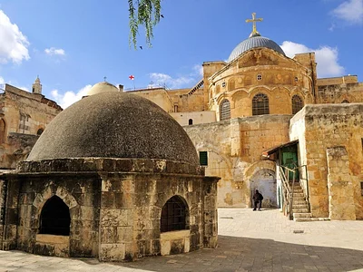
Iglesia del Santo Sepulcro
La Iglesia del sagrado sepulcro en la ciudad Vieja de Jerusalén se asienta en lo que se cree que es
el lugar de
la crucificción, sepultura y resurrección de Jesús. La Iglesia el lugar más sagrado del cristianismo, se
encuentra... LEER +
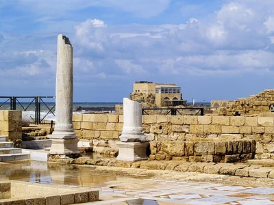
Cesarea
Con un enorme teatro de la época Romana, un antiguo acueducto que enmarca una playa dorada y mucho
más, Cesarea
alberga algunas de las ruinas más sorprendentes de Israel. Constuida por Hérodes el Grande en... LEER +
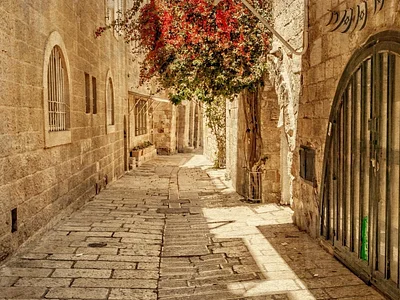
Barrio Judío de Jerusalén
Hogar del Muro Occidental, el lugar más sagrado del judaímos, así como sinagogas, escuelas
religiosas y un
tramo de la época bizantina de la antigua Cardo, el barrio judío de Jerusalén es uno de los cuatro barrios
... LEER +
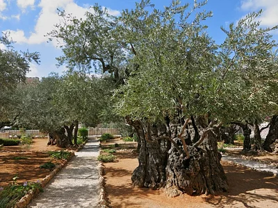
Jardín de Getsemaní
Según la fe cristiana Jesús oró en el jardín de Getsemaní la noche antes de su arresto. Hoy en día,
la Iglesia
de todas las naciones custodian este lugar sagrado a los pies del Monte de los Olivos, donde los frailes
franciscanos pa...LEER +
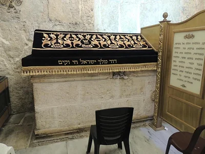
Tumba del Rey David
Algunos concideran que la tumba del Rey David, en el lugar sagrado del Monte Sión de Jerusalén, es
el lugar de
enterramiento del Rey David de Israél, pero se debate si realmente fue enterrado allí. Independientemente de...LEER +